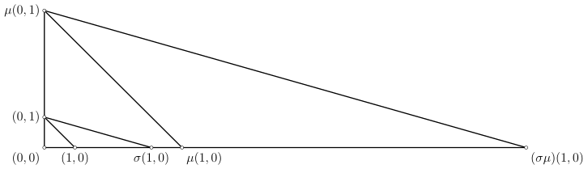
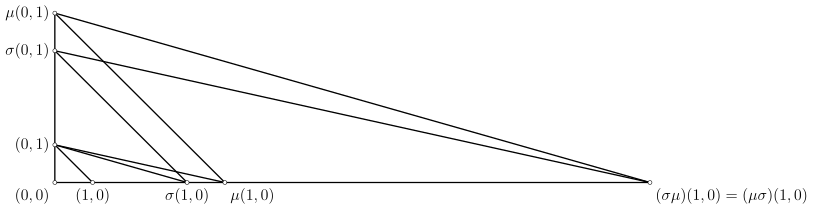

Hình học affine
Phần 2: Trực giác đại số
Trong mục này, ta sẽ cố gắng xây dựng các cấu trúc đại số trên mặt phẳng Playfair, nhằm thay thế các lập luận hình học bởi các tính toán đại số. Nếu không nói gì thêm, ta ngầm hiểu các phép co giãn là không suy biến.
Chứng minh
Với $\sigma_{1},\sigma_{2}\in\mathbf{Dil}(\mathscr{P})$ và hai điểm phân biệt $P,Q$, ta có $$\overline{\sigma_{1}(\sigma_{2}(P))\sigma_{1}(\sigma_{2}(Q))}\parallel\overline{\sigma_{2}(P)\sigma_{2}(Q)}\parallel\overline{PQ}$$ nên $\sigma_{1}\circ\sigma_{2}\in\mathbf{Dil}(\mathscr{P})$. Và với $\sigma\in\mathbf{Dil}(\mathscr{P})$, ta có $$\overline{\sigma^{-1}(P)\sigma^{-1}(Q)}\parallel\overline{\sigma(\sigma^{-1}(P))\sigma(\sigma^{-1}(Q))}=\overline{PQ}$$ nên $\sigma^{-1}\in\mathbf{Dil}(\mathscr{P})$.
Chứng minh
Với $\tau_{1},\tau_{2}\in\mathbf{T}(\mathscr{P})$, nếu $\tau_{1}\circ\tau_{2}$ có một điểm bất động $p$ thì ta có $\tau_{2}(p)=\tau_{1}^{-1}(p)$. Vì phép tịnh tiến hoàn toàn được xác định qua ảnh của một điểm nên ta có $\tau_{2}=\tau_{1}^{-1}$, hay $\tau_{1}\circ\tau_{2}=\mathrm{Id}_{\mathscr{P}}$. Vậy $\mathbf{T}(\mathscr{P})$ là một nhóm con của $\mathbf{Dil}(\mathscr{P})$.
Với $\sigma\in\mathbf{Dil}(\mathscr{P})$ và $\tau\in\mathbf{T}(\mathscr{P})$, nếu $c_{\sigma}(\tau):=\sigma\tau\sigma^{-1}$ có điểm bất động $P$ thì $\tau$ có điểm bất động $\sigma^{-1}(P)$, suy ra $\tau=\mathrm{Id}_{\mathscr{P}}$, dẫn đến $\sigma\tau\sigma^{-1}=\sigma\sigma^{-1}=\mathrm{Id}_{\mathscr{P}}$. Chứng minh hoàn tất.
Ta cùng đến với các nhận xét quan trọng sau.
Chứng minh
Chứng minh
Chứng minh
Giờ ta xét trường hợp $\tau_{1}$ và $\tau_{2}$ có cùng phương với nhau. Theo giả thiết, một trong hai phép tịnh tiến đó phải khác phương với $\tau_{1}$ và $\tau_{2}$, ta ký hiệu nó là $\tau_{3}$. Khi đó $$\tau_{3}\circ(\tau_{1}\circ\tau_{2})=(\tau_{3}\circ\tau_{1})\circ\tau_{2}=(\tau_{1}\circ\tau_{3})\circ\tau_{2}=\tau_{1}\circ(\tau_{3}\circ\tau_{2}) =(\tau_{3}\circ\tau_{2})\circ\tau_{1}=\tau_{3}\circ(\tau_{2}\circ\tau_{1}).$$ Vậy $\tau_{1}$ và $\tau_{2}$ giao hoán với nhau trong mọi trường hợp, và cho ta kết luận.
Các tiên đề tiếp theo sẽ giúp ta mô tả chính xác hơn mặt phẳng mà ta mong muốn. Trước mắt, nó giúp ta loại bỏ trường hợp kỳ dị kiểu như mặt phẳng Moulton.
Mặt phẳng Playfair thỏa mãn hai tiên đề dịch chuyển được gọi là mặt phẳng Desargues.
Để ý rằng phép tịnh tiến hoàn toàn được xác định qua ảnh của một điểm nên với hai điểm $P$ và $Q$, tồn tại duy nhất một phép tịnh tiến biến $P$ thành $Q$, và được ký hiệu là
$\overrightarrow{PQ}$. Với tiên đề dịch chuyển thứ nhất, ta có $\mathbf{T}(\mathscr{P})$ là một nhóm giao hoán, do đó từ nay ta viết phép toán của $\mathbf{T}(\mathscr{P})$ theo
lối cộng tính. Từ tính duy nhất, ta có các tính chất đơn giản sau:
- Với mỗi $P\in\mathscr{P}$, ta có $\overrightarrow{PP}=\mathrm{Id}_{\mathscr{P}}$. Ta cũng thường xuyên ký hiệu $\overrightarrow{0}$ thay vì $\mathrm{Id}_{\mathscr{P}}$.
- (Hệ thức Chasles) Với mỗi $P,Q,R\in\mathscr{P}$, ta có $\overrightarrow{PQ}+\overrightarrow{QR}=\overrightarrow{PR}$.
Ta kỳ vọng rằng $\mathbb{K}(\mathscr{P})$ là một trường, do đó ta trang bị hai phép toán trên $\mathbb{K}(\mathscr{P})$ như sau: \begin{align*} (a+b)\tau &:= a\tau+b\tau;\\ a\cdot b &:= a\circ b. \end{align*} Phần tử $0\in\mathbb{K}(\mathscr{P})$ được xác định bởi $0\tau:=\overrightarrow{0}$ với mỗi $\tau\in\mathbf{T}(\mathscr{P})$ và phần tử $1\in\mathbb{K}(\mathscr{P})$ được xác định bởi $1:=\mathrm{Id}_{\mathbf{T}(\mathscr{P})}$. Với cách xây dựng này, ta có $\mathbb{K}(\mathscr{P})$ là một vành chia, tức là giống như trường nhưng phép nhân không cần giao hoán. Dễ dàng chứng minh được $\mathbb{K}(\mathscr{P})$ là một vành có đơn vị. Để chứng minh tính khả nghịch, ta làm theo các bước sau:
Chứng minh
Nếu $Q=P$ thì ta có $\tau=\overrightarrow{0}$. Còn nếu $Q\neq P$ thì do $\sigma_{a}$ biến cả $P$ và $Q$ thành $P$ nên nó là suy biến, dẫn đến $a\overrightarrow{PQ}=\overrightarrow{0}$ với mỗi $Q\in\mathscr{P}$, hay là $a=0$.
Chứng minh
Cố định $P\in\mathscr{P}$. Khi đó ta có tương ứng một-một giữa nhóm các phép vị tự tâm $P$, được ký hiệu bởi $\mathbf{H}(\mathscr{P})_{P}^{\times}$, và
$\mathbb{K}(\mathscr{P})^{\times}$ được cho bởi
$$\varphi_{P}:\mathbf{H}(\mathscr{P})_{P}^{\times}\ni\sigma\mapsto c_{\sigma}\in\mathbb{K}(\mathscr{P})^{\times}$$
và
$$\psi_{P}:\mathbb{K}(\mathscr{P})^{\times}\ni a\mapsto\sigma_{a}\in\mathbf{H}(\mathscr{P})_{P}^{\times}.$$
Điều này cho thấy rằng $\mathbf{H}(\mathscr{P})_{P}$ gồm các phép vị tự tâm $P$ cùng với phép suy biến tại $P$ có thể được xem như là một vành chia đẳng cấu với
$\mathbb{K}(\mathscr{P})$. Như vậy, tiên đề dịch chuyển thứ hai còn có thể hiểu như sau: Nếu $\tau_{1},\tau_{2}\neq\overrightarrow{0}$ là hai phép tịnh tiến cùng phương thì
tồn tại (và do đó là duy nhất) $a\in\mathbb{K}(\mathscr{P})^{\times}$ sao cho $a\tau_{1}=\tau_{2}$.
Nhờ có đẳng cấu trường này, ta có thể "chuyển" cấu trúc cộng trên trường $\mathbb{K}(\mathscr{P})$ lên trên một đường thẳng bất kỳ. Cụ thể hơn, ta lấy đường thẳng $\ell$
có chứa hai điểm phân biệt $P$ và $Q$. Như vậy, mỗi phép vị tự $\sigma$ có tâm $P$ sẽ tương ứng duy nhất với một điểm $S$ trên $\ell$ sao cho
$$\overrightarrow{PS}=c_{\sigma}\left(\overrightarrow{PQ}\right).$$
Nhưng làm thế nào để ta có thể dựng được phép nhân? Ta cần lấy thêm một đường thẳng $PR$ khác với $PQ$. Để tiện trình bày, ta đặt tên lại $P,Q,R$ là $(0,0)$, $(1,0)$, và $(0,1)$
và lạm dụng tên gọi hai trục là trục hoành và trục tung. Với hai phép vị tự $\sigma$ và $\mu$, ta dựng phép vị tự $\sigma\mu$ như sau: qua $\mu(1,0)$ kẻ đường thẳng song song
với $\overline{(1,0)(0,1)}$, cắt trục tung tại $\mu(0,1)$. Sau đó qua $\mu(0,1)$ kẻ đường thẳng song song với $\overline{\mu(1,0)(0,1)}$, cắt trục hoành tại điểm cần dựng
$(\sigma\mu)(1,0)$.


Với tiên đề cuối cùng, ta có $\mathbb{K}(\mathscr{P})$ là một trường, và mặt phẳng $\mathscr{P}$ lúc này được gọi là mặt phẳng affine. Không khó để thấy rằng mô hình này
tương đương với mặt phẳng tọa độ $\mathbb{K}^{2}$ quen thuộc.
Tóm lại, ta đã đặc trưng mặt phẳng tọa độ bằng $6$ tiên đề:
- Tồn tại duy nhất một đường thẳng đi qua hai điểm phân biệt trên mặt phẳng;
- Tồn tại ba điểm không thẳng hàng;
- Tồn tại duy nhất một đường thẳng đi qua một điểm cho trước và song song với một đường thẳng cho trước;
- Tồn tại một phép tịnh tiến biến một điểm cho trước thành một điểm cho trước khác;
- Cho trước ba điểm thẳng hàng phân biệt. Khi đó tồn tại một phép vị tự giữ nguyên điểm thứ nhất và biến điểm thứ hai thành điểm thứ ba;
- Cho hai đường thẳng $\ell_{1}$ và $\ell_{2}$ cắt nhau tại $O$. Trên $\ell_{i}$ lấy ba điểm phân biệt $A_{i},B_{i},C_{i}$, với $i=1,2$. Khi đó nếu $A_{1}B_{2}\parallel B_{1}C_{2}$ và $A_{2}B_{1}\parallel C_{1}B_{2}$ thì $A_{1}A_{2}\parallel C_{1}C_{2}$.